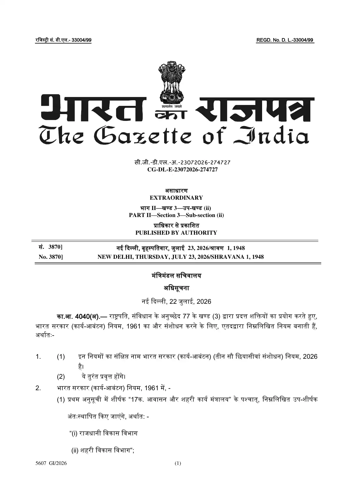
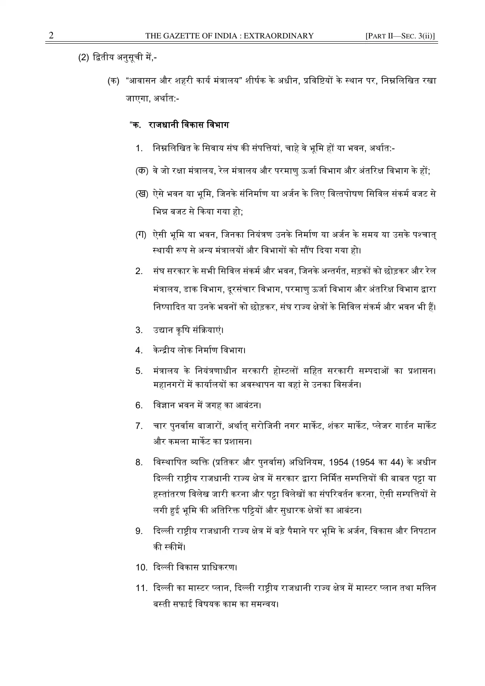
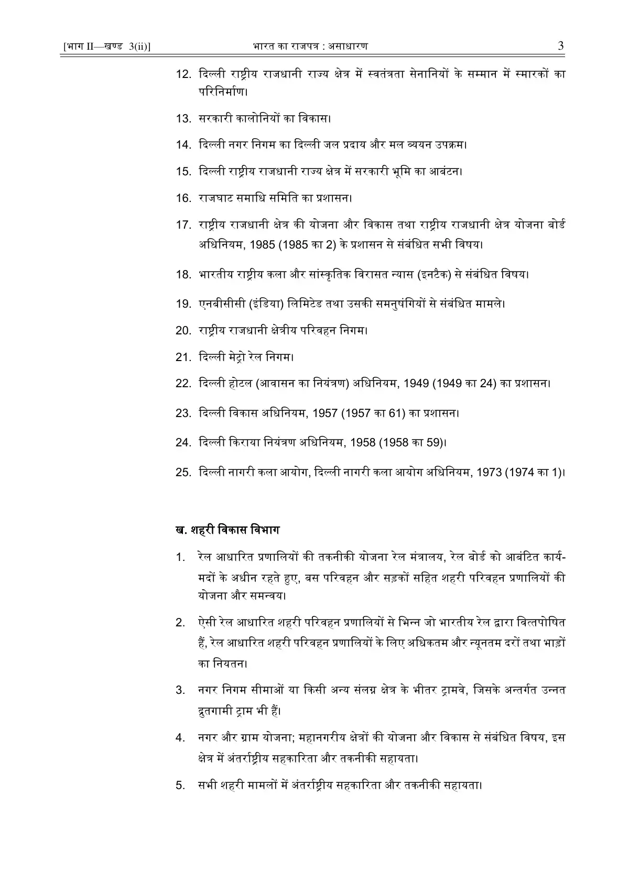
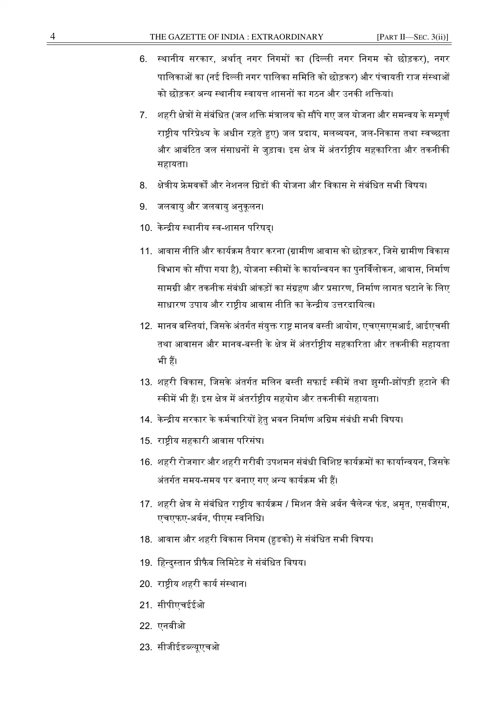
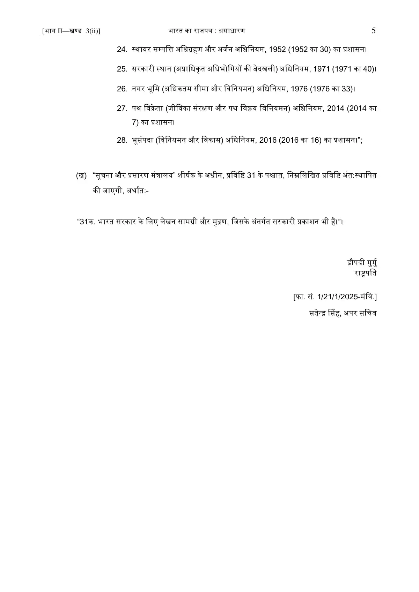
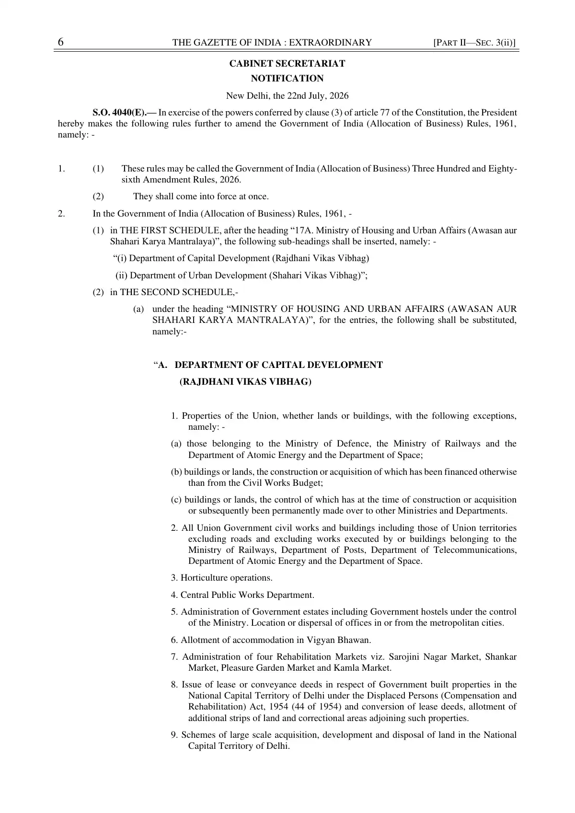
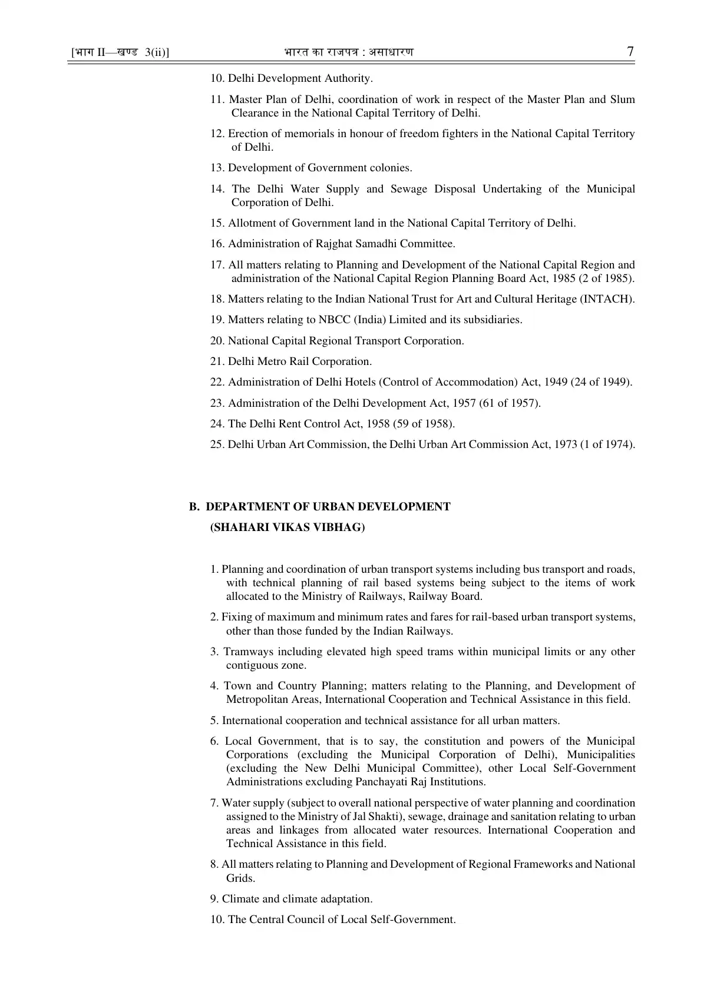
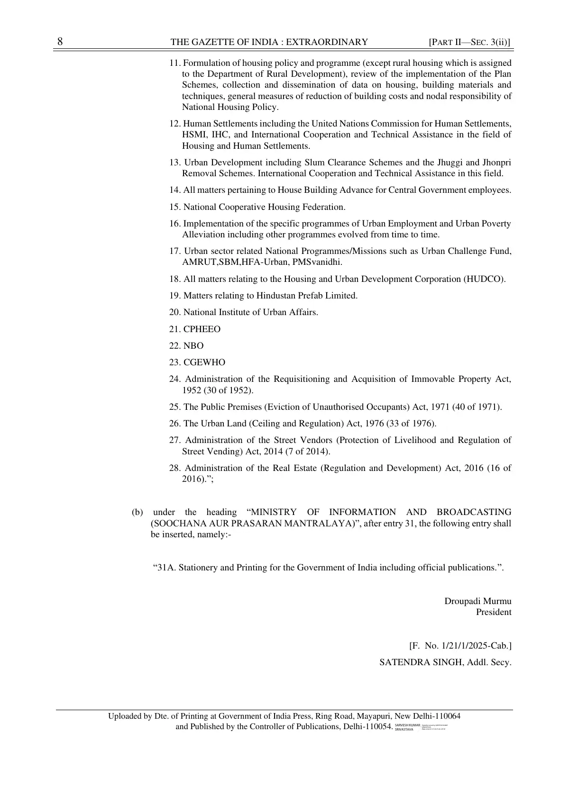

Amendment #386 (S.O. 4040(E), 2026)
3 changes: 1 to the First Schedule, 2 to the Second Schedule. 3 applied
What it did to the ministries
- grewMinistry of Housing and Urban Affairs grows from 43 to 53 subjects change 1 · histories: Housing and Urban Affairs
The order, page by page
Page 1 of 8

Page 2 of 8

Page 3 of 8

Page 4 of 8

Page 5 of 8

Page 6 of 8

12after Schedule 1 › Ministry of Housing and Urban Affairs
- i. Department of Capital Development
- ii. Department of Urban Development
applied at schedule 1 › ministry 17A in the Rules after #386
Schedule 2 › MINISTRY OF HOUSING AND URBAN AFFAIRS
- A. DEPARTMENT OF CAPITAL DEVELOPMENT
- 1. Properties of the Union, whether lands or buildings, with the following exceptions namely: -
- a. those belonging to the Ministry of Defence, the Ministry of Railways and the Department of Atomic Energy and the Department of Space
- b. buildings or lands, the construction or acquisition of which has been financed otherwise than from the Civil Works Budget
- c. buildings or lands, the control of which has at the time of construction or acquisition or subsequently been permanently made over to other Ministries and Departments.
- 2. All Union Government civil works and buildings including those of Union territories excluding roads and excluding works executed by or buildings belonging to the Ministry of Railways, Department of Posts, Department of Telecommunications Department of Atomic Energy and the Department of Space.
and 52 more
- 3. Horticulture operations.
- 4. Central Public Works Department.
- 5. Administration of Government estates including Government hostels under the control of the Ministry. Location or dispersal of offices in or from the metropolitan cities.
- 6. Allotment of accommodation in Vigyan Bhawan.
- 7. Administration of four Rehabilitation Markets viz. Sarojini Nagar Market, Shankar Market, Pleasure Garden Market and Kamla Market.
- 8. Issue of lease or conveyance deeds in respect of Government built properties in the National Capital Territory of Delhi under the Displaced Persons (Compensation and Rehabilitation) Act, 1954 (44 of 1954) and conversion of lease deeds, allotment of additional strips of land and correctional areas…
- 9. Schemes of large scale acquisition, development and disposal of land in the National Capital Territory of Delhi.
- 10. Delhi Development Authority.
- 11. Master Plan of Delhi, coordination of work in respect of the Master Plan and Slum Clearance in the National Capital Territory of Delhi.
- 12. Erection of memorials in honour of freedom fighters in the National Capital Territory of Delhi.
- 13. Development of Government colonies.
- 14. The Delhi Water Supply and Sewage Disposal Undertaking of the Municipal Corporation of Delhi.
- 15. Allotment of Government land in the National Capital Territory of Delhi.
- 16. Administration of Rajghat Samadhi Committee.
- 17. All matters relating to Planning and Development of the National Capital Region and administration of the National Capital Region Planning Board Act, 1985 (2 of 1985).
- 18. Matters relating to the Indian National Trust for Art and Cultural Heritage (INTACH).
- 19. Matters relating to NBCC (India) Limited and its subsidiaries.
- 20. National Capital Regional Transport Corporation.
- 21. Delhi Metro Rail Corporation.
- 22. Administration of Delhi Hotels (Control of Accommodation) Act, 1949 (24 of 1949).
- 23. Administration of the Delhi Development Act, 1957 (61 of 1957).
- 24. The Delhi Rent Control Act, 1958 (59 of 1958).
- 25. Delhi Urban Art Commission, the Delhi Urban Art Commission Act, 1973 (1 of 1974).
- B. DEPARTMENT OF URBAN DEVELOPMENT
- 1. Planning and coordination of urban transport systems including bus transport and roads with technical planning of rail based systems being subject to the items of work allocated to the Ministry of Railways, Railway Board.
- 2. Fixing of maximum and minimum rates and fares for rail-based urban transport systems other than those funded by the Indian Railways.
- 3. Tramways including elevated high speed trams within municipal limits or any other contiguous zone.
- 4. Town and Country Planning; matters relating to the Planning, and Development of Metropolitan Areas, International Cooperation and Technical Assistance in this field.
- 5. International cooperation and technical assistance for all urban matters.
- 6. Local Government, that is to say, the constitution and powers of the Municipal Corporations (excluding the Municipal Corporation of Delhi), Municipalities (excluding the New Delhi Municipal Committee), other Local Self-Government Administrations excluding Panchayati Raj Institutions.
- 7. Water supply (subject to overall national perspective of water planning and coordination assigned to the Ministry of Jal Shakti), sewage, drainage and sanitation relating to urban areas and linkages from allocated water resources. International Cooperation and Technical Assistance in this field.
- 8. All matters relating to Planning and Development of Regional Frameworks and National Grids.
- 9. Climate and climate adaptation.
- 10. The Central Council of Local Self-Government.
- 11. Formulation of housing policy and programme (except rural housing which is assigned to the Department of Rural Development), review of the implementation of the Plan Schemes, collection and dissemination of data on housing, building materials and techniques, general measures of reduction of…
- 12. Human Settlements including the United Nations Commission for Human Settlements HSMI, IHC, and International Cooperation and Technical Assistance in the field of Housing and Human Settlements.
- 13. Urban Development including Slum Clearance Schemes and the Jhuggi and Jhonpri Removal Schemes. International Cooperation and Technical Assistance in this field.
- 14. All matters pertaining to House Building Advance for Central Government employees.
- 15. National Cooperative Housing Federation.
- 16. Implementation of the specific programmes of Urban Employment and Urban Poverty Alleviation including other programmes evolved from time to time.
- 17. Urban sector related National Programmes/Missions such as Urban Challenge Fund AMRUT,SBM,HFA-Urban, PMSvanidhi.
- 18. All matters relating to the Housing and Urban Development Corporation (HUDCO).
- 19. Matters relating to Hindustan Prefab Limited.
- 20. National Institute of Urban Affairs.
- 21. CPHEEO
- 22. NBO
- 23. CGEWHO
- 24. Administration of the Requisitioning and Acquisition of Immovable Property Act 1952 (30 of 1952).
- 25. The Public Premises (Eviction of Unauthorised Occupants) Act, 1971 (40 of 1971).
- 26. The Urban Land (Ceiling and Regulation) Act, 1976 (33 of 1976).
- 27. Administration of the Street Vendors (Protection of Livelihood and Regulation of Street Vending) Act, 2014 (7 of 2014).
- 28. Administration of the Real Estate (Regulation and Development) Act, 2016 (16 of 2016).
applied at schedule 2 › ministry MINISTRY OF HOUSING AND URBAN AFFAIRS in the Rules after #386
read page break
Page 7 of 8

Page 8 of 8

3after Schedule 2 › MINISTRY OF INFORMATION AND BROADCASTING › entry 31
- 31A. Stationery and Printing for the Government of India including official publications.
applied at schedule 2 › ministry MINISTRY OF INFORMATION AND BROADCASTING › group_heading VIII › entry 31A in the Rules after #386
How this document was read
From the Government of India (Allocation of Business) Rules, 1961 and their amendments, as published by the Cabinet Secretariat (cabsec.gov.in), read by orgpedia. The readings of the older scanned gazettes have known gaps.